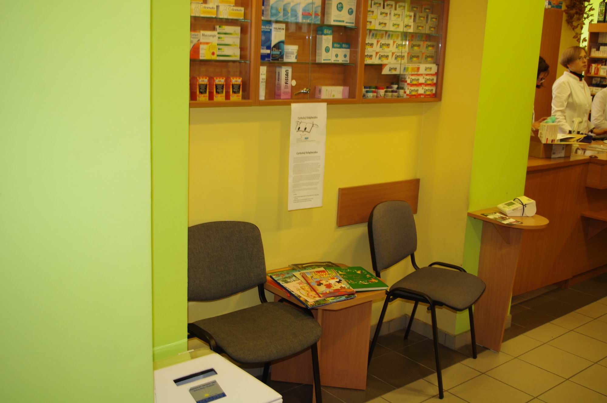
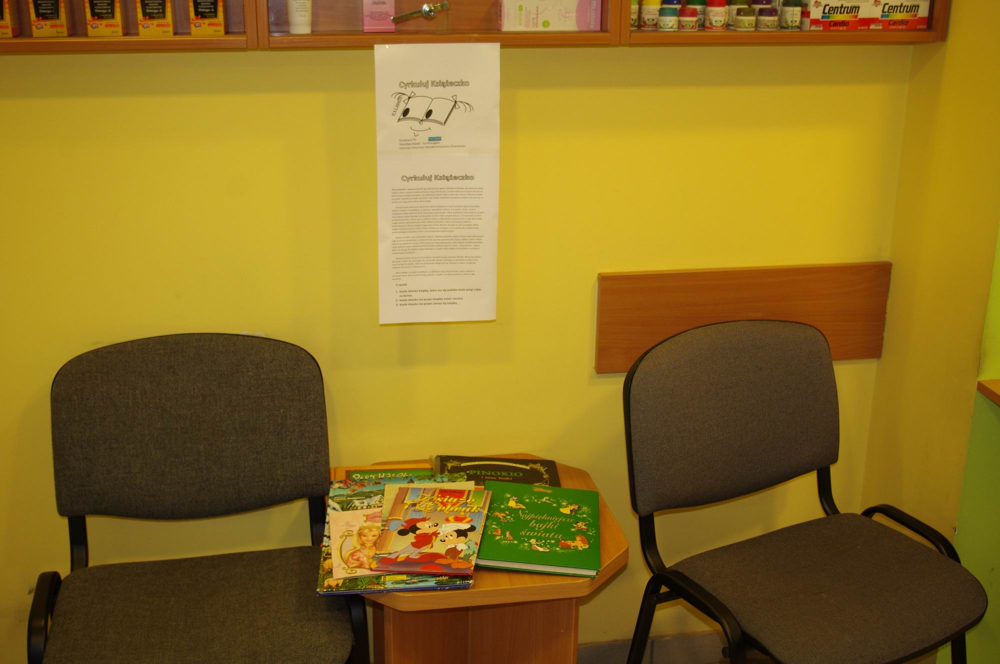
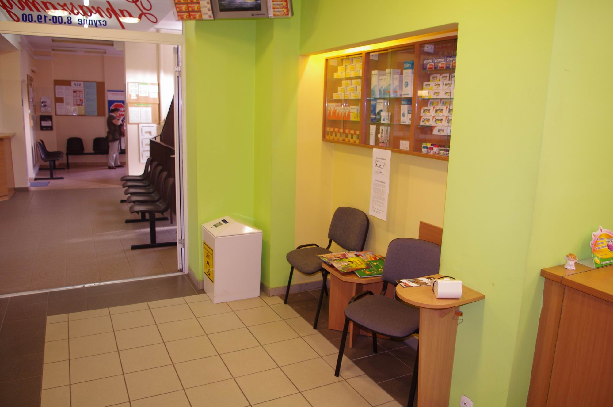
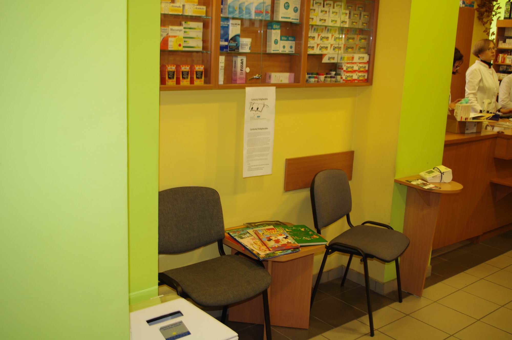
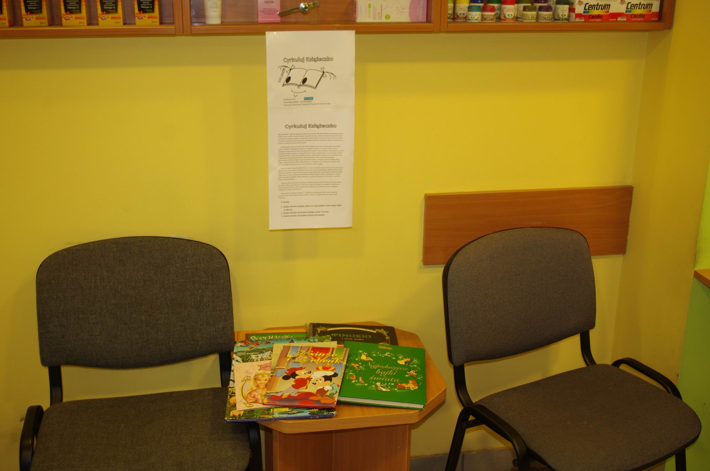
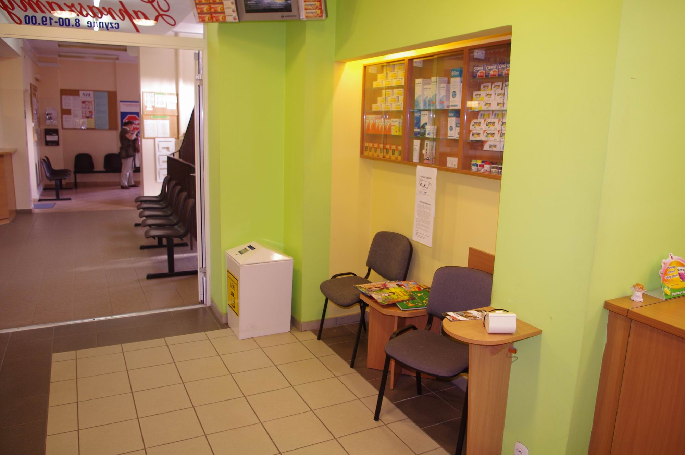

Jak zorganizować akcję "Cyrkuluj Książeczko" w szkole
Chciałbym Ci pokazać drogę, którą należy wykonać by przeprowadzić akcję w szkole. Dotyczy to każdej akcji, czy to zbierania zakrętek, książek lub też makulatury. Wiele zależy od samego pomysłu, a też wiele od Twojej umiejętności słuchania innych. Jedni radzą Ci dobrze inni nie za bardzo. To Ty musisz rozróżnić i wybrać. Każdy ma prawo próbować i każdy ma prawo do pomyłem. Ważne by zawsze wstać i znów próbować.
- Ustal co chcesz zrobić, z kim, i jak. Określ ramy czasowe akcji - kiedy jest najdogodniej i kiedy Ci pasuje. Czas przygotowania w szkole 1 tydzień i 2 tygodnie zbiórki. Ustal kto będzie odbierał i kiedy zebrane książki.
- Pójdź do dyrektora szkoły i zapytaj o pozwolenie. Przedstaw swoją koncepcję i wysłuchaj rad i zaleceń.
- Najczęściej dyrektor skieruje Ciebie do nauczyciela, który zajmuje się takimi sprawami. Zwróć się do tego nauczyciela. Ustal miejsce zbiórki, sposób powiadomienia uczniów i osoby współpracujące. Książki można zbierać przy wyjściu ze szkoły, w bibliotece czy w jakiejś Sali.
- Poproś nauczyciela od rysunków by poprosił dzieci na zajęciach o namalowanie plakatów, nauczyciela od j. polskiego by dzieci miały dodatkowy temat pisząc wypracowanie, które i tak maiły napisać, a tym tematem byłaby kreatywność akcji według piszącego, albo podobne. Poproś nauczycieli wspierającego by poprosił wychowawców o przekazaniu informacji o akcji na lekcji wychowawczej. Poszukaj sposobu by o akcji dowiedzieli się również rodzice dzieci.
- Rozmieść plakaty w szkole w widocznych miejscach.
- W przeddzień akcji sprawdź czy wszystko jest przygotowane.
- Sukcesywnie organizuj odbiór książek ze szkoły.
Pewne rady:
- Jeżeli masz chętnych do pomocy przydziel im zadania. Samemu jest niekiedy ciężko.
- Najlepiej gdy jedno zadanie wykonuje co najmniej dwie osoby. Wzajemnie się wspierają i motywują.
- Każdy pomocnik staje się współtwórcą przedsięwzięcia. Trzeba to docenić.
- Jeżeli robisz wszystko sam, splendor spada tylko na Ciebie, jeżeli z innymi to na wszystkich mimo, że to Ty wykonałeś najwięcej roboty. Nie da się wycenić kto więcej się napracował i dla kogo było to większym poświeceniem. Pomocnicy wspierają również Ciebie, a sukces ma wielu ojców.
- Dyrektor czy nauczyciel to też człowiek i można z nimi rozmawiać jak z normalnymi ludźmi. Strach czy skrępowanie zostaw sobie na inną okazję. To tylko przeszkadza.
- Mimo pomocy wszystko jest na Twojej głowie i większość musisz robić samemu.
- Zostaw sobie miejsce na nieprzewidziane sytuacje - również te miłe.
- Jeżeli macie swoje sposoby na organizację akcji podziel się z nami taką wiedzą.
 




